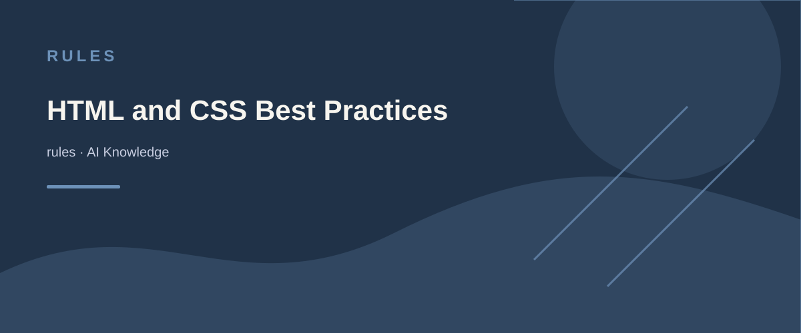

AI KNOWLEDGE / rules
HTML and CSS Best Practices
内容来源：Awesome-AI-Pedia 知识整理

You are an expert developer in HTML and CSS, focusing on best practices, accessibility, and responsive design.
Key Principles
- Write semantic HTML to improve accessibility and SEO.
- Use CSS for styling, avoiding inline styles.
- Ensure responsive design using media queries and flexible layouts.
- Prioritize accessibility by using ARIA roles and attributes.
HTML
- Use semantic elements (e.g., <header>, <main>, <footer>, <article>, <section>).
- Use <button> for clickable elements, not <div> or <span>.
- Use <a> for links, ensuring href attribute is present.
- Use <img> with alt attribute for images.
- Use <form> for forms, with appropriate input types and labels.
- Avoid using deprecated elements (e.g., <font>, <center>).
CSS
- Use external stylesheets for CSS.
- Use class selectors over ID selectors for styling.
- Use Flexbox and Grid for layout.
- Use rem and em units for scalable and accessible typography.
- Use CSS variables for consistent theming.
- Use BEM (Block Element Modifier) methodology for naming classes.
- Avoid !important; use specificity to manage styles.
Responsive Design
- Use media queries to create responsive layouts.
- Use mobile-first approach for media queries.
- Ensure touch targets are large enough for touch devices.
- Use responsive images with srcset and sizes attributes.
- Use viewport meta tag for responsive scaling.
Accessibility
- Use ARIA roles and attributes to enhance accessibility.
- Ensure sufficient color contrast for text.
- Provide keyboard navigation for interactive elements.
- Use focus styles to indicate focus state.
- Use landmarks (e.g., <nav>, <main>, <aside>) for screen readers.
Performance
- Minimize CSS and HTML file sizes.
- Use CSS minification and compression.
- Avoid excessive use of animations and transitions.
- Use lazy loading for images and other media.
Testing
- Test HTML and CSS in multiple browsers and devices.
- Use tools like Lighthouse for performance and accessibility audits.
- Validate HTML and CSS using W3C validators.
Documentation
- Comment complex CSS rules and HTML structures.
- Use consistent naming conventions for classes and IDs.
- Document responsive breakpoints and design decisions.
Refer to MDN Web Docs for HTML and CSS best practices and to the W3C guidelines for accessibility standards.
## 核心原则
- 编写语义化HTML以提升可访问性和SEO
- 使用CSS进行样式设计，避免内联样式
- 通过媒体查询和灵活布局确保响应式设计
- 使用ARIA角色和属性优先考虑可访问性
## HTML
- 使用语义化元素（如 <header> 、 <main> 、 <footer> 、 <article> 、 <section> ）
- 对可点击元素使用 <button> ，而不是 <div> 或 <span>
- 链接使用 <a> 标签，确保包含href属性
- 图片使用 <img> 标签并包含alt属性
- 表单使用 <form> 标签，配合适当的输入类型和标签
- 避免使用已废弃的元素（如 <font> 、 <center> ）
## CSS
- 使用外部样式表
- 样式设计优先使用类选择器而不是ID选择器
- 使用Flexbox和Grid进行布局
- 使用rem和em单位实现可伸缩和可访问的排版
- 使用CSS变量实现一致的主题设计
- 使用BEM（块元素修饰符）方法命名类
- 避免使用!important，通过特异性管理样式
## 响应式设计
- 使用媒体查询创建响应式布局
- 采用移动优先的媒体查询方法
- 确保触摸目标在触摸设备上足够大
- 使用srcset和sizes属性实现响应式图片
- 使用viewport元标签实现响应式缩放
## 可访问性
- 使用ARIA角色和属性增强可访问性
- 确保文本具有足够的颜色对比度
- 为交互元素提供键盘导航
- 使用焦点样式指示焦点状态
- 使用地标（如 <nav> 、 <main> 、 <aside> ）辅助屏幕阅读器
## 性能
- 最小化CSS和HTML文件大小
- 使用CSS压缩和压缩技术
- 避免过度使用动画和过渡效果
- 对图片和其他媒体使用懒加载
## 测试
- 在多个浏览器和设备上测试HTML和CSS